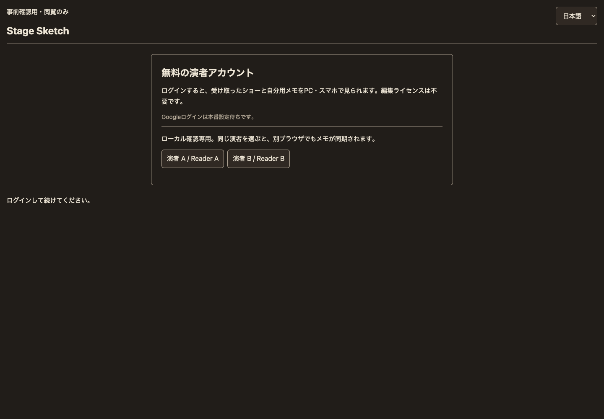
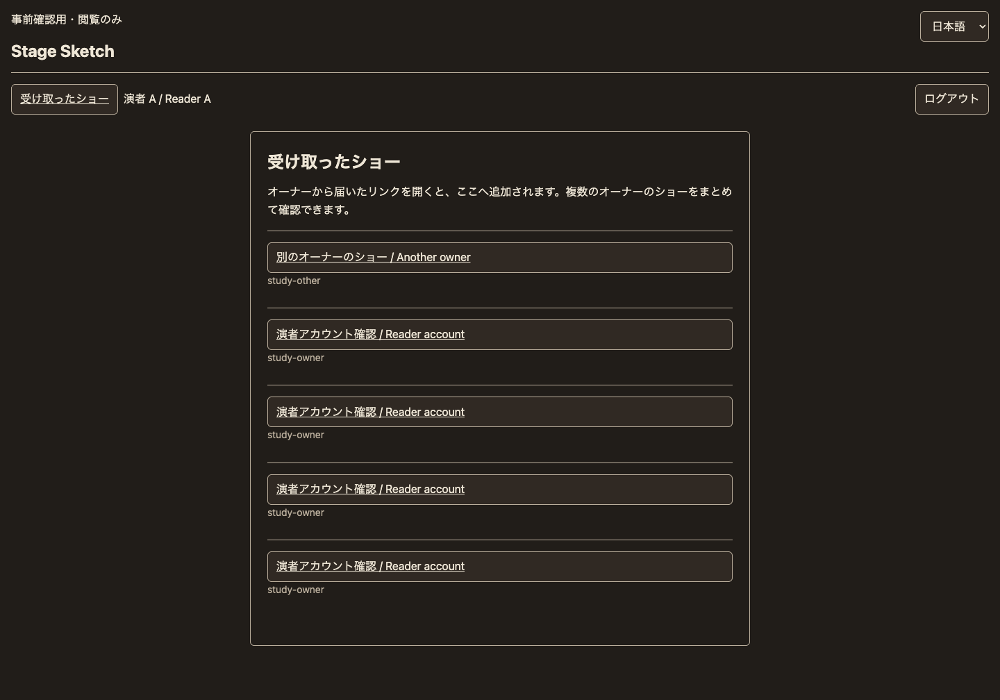
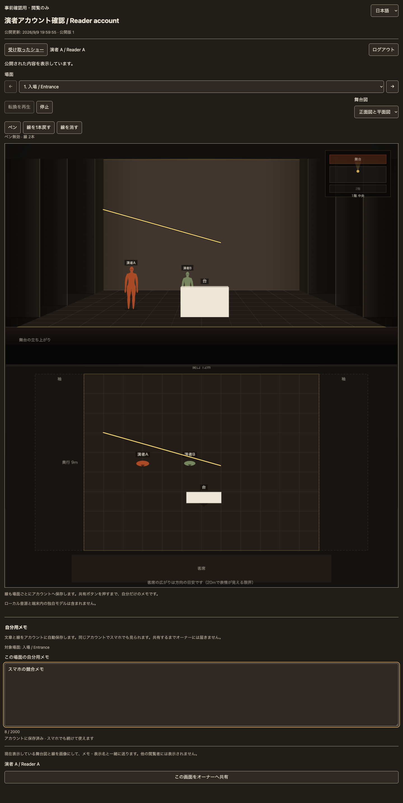
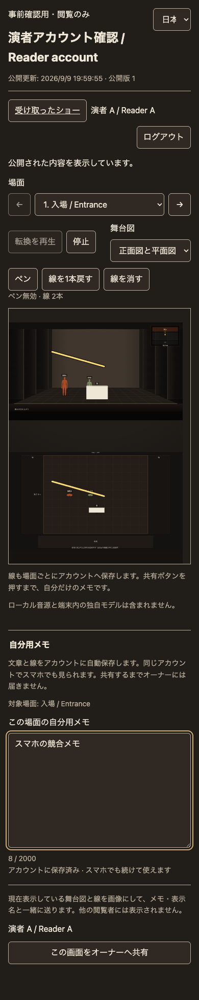

2026-09-09 · ローカル実装と検証。Stage Sketch本家・ベータの共通機能。
Googleを前提に実装しています。Googleの実アカウント接続は設定未登録のため未確認です。本番デプロイ・秘密情報登録・外部への送信は行っていません。以下は専用のローカルテストアカウントで確認しました。
開いていた招待リンクを開く 受け取ったショーの一覧 English
元の8796番も最新コードへ更新し、既存のショーとリンクを保持しています。複数オーナー・端末同期の比較データは8800番の一覧にあります。両ポートは独立したローカル保存先です。
オーナー画面: ベータ / 本家。ローカル専用ID study-owner、パスワード local-study-owner。別オーナーは study-other / local-study-other。実データ・実認証情報は使っていません。
StudyLinks: 192bit招待トークン、公開スナップショット、明示共有したメモと画像。所有者操作は既存の認証済み作成者とサーバーで照合します。StudyReaderAuth: OAuthの単回状態と不透明なセッションのハッシュ。Googleの署名・issuer・audience・有効期限・nonceを検証。PKCEとブラウザに結び付けたstateを使用します。セッションは7日、HttpOnly / SameSite=Lax、本番HTTPSではSecure。ログアウトでサーバー上のセッションも無効化します。StudyReaderAccount: サーバー確認済みの本人IDごとに独立したSQLite Durable Object。所有者とショーIDから結び付きを決め、リンク再発行後も同じ本人ノートを保持。version照合と操作IDで競合と再送の重複を防ぎます。認証実装の根拠: Google OpenID Connect、Google Web Server OAuth。実際のGoogle接続確認は、本番用設定登録後の別工程です。
直前の全体780件は合格。その後、別タスクがstage-i18n.js / stage-sketch.js等を編集中となり、翻訳の登録・正規表現・既存テストの文字列照合4件が失敗しています。その共有ファイルへは修正を重ねていません。今回のログイン・同期とWorkerの118件、実SQLiteの検証は合格しています。
| 検査 | 結果・証拠 |
|---|---|
| 関連Node/Worker | 今回機能・Workerは118 / 118。集中検証ログ。最新の全体は778 / 782で、並行する翻訳作業の4件が失敗。全体ログ |
| 新しい認証・本人ノートの実SQLite | 14 / 14。プロセス再起動、文字・32768点の分割保存、競合、別人分離、ログアウト永続化。ログ |
| 既存リンク / 画像 / リアルタイム | 25 / 25、16 / 16、13 / 13。リンクと通信 / 画像 |
| Chromeの別ブラウザ間 | ログイン・2オーナー・文章と両図の線・相互同期・競合選択・共有・別人非表示・ログアウト。JS例外0。結果 |
| 失敗状態と操作 | 旧メモの明示引継ぎ、通信待ちと再読込復旧、マウス共有、フォーカス、アカウント切替拒否。JS例外0。結果 |
| ペン回帰 | マウス正面・タッチ平面、場面分離、Undo/消去、日英4サイズ、元ショー不変。ログ |
| 日英デザイン検査 | ログイン・一覧・閲覧×390/1440px。NG 0 / WARN 0 / 未計測0。ログ |
| 生成・公開ビルド・構文・差分 | build_stage.py --check、JS/Python構文、git diff --checkは合格。公開ビルドは並行作業によるstage-i18n.js / stage-set-builder.js / stage-sketch.jsの再生成待ち。最終ログ / 並行変更前の合格ログ |
元の8796番の最終確認: ログイン必須、再起動後の既存ショー保持、PC全幅、スマホの言語選択、本家・ベータ双方の案内を確認。
ログイン前、Google設定待ち、ログイン済み、複数オーナー一覧、本人の文章とペン、別人の空ノート、同期済み、通信待ち、競合、明示共有、ログアウト。画面寸法は1440×1000 / 1024×768 / 390×844 / 844×390、ペン回帰では768×1024も確認しました。




実iPhone/iPad/Android、Safari、実タッチペン、異なる物理端末同士のネットワーク、Googleの実アカウントによる同意画面・ログインは未確認です。スマホ検証はChromeの独立コンテキストと画面・タッチエミュレーションです。127.0.0.1はそのPC専用なので、実スマホからはこのURLへ到達しません。
STUDY_LINKS / v3-study-links が未適用なら追加します。STUDY_READER_AUTH → StudyReaderAuth、STUDY_READER_ACCOUNTS → StudyReaderAccountを追加し、v4-study-reader-accountsで両方をnew_sqlite_classesとして作成します。定義はwrangler.tomlに用意済みです。/study/auth/callbackをredirect URIに登録します。必要な同意画面設定も確認します。STUDY_GOOGLE_CLIENT_ID、STUDY_GOOGLE_REDIRECT_URIをWorker変数へ、STUDY_GOOGLE_CLIENT_SECRETをWorker secretへ登録します。本番にSTUDY_LOCAL_READER_LOGIN=trueを設定しません。現コードでもローカルホスト以外のテストログインは拒否します。元の招待リンクを使う場合は STUDY_PORT=8796 STUDY_PERSIST=/tmp/stage-study-local-sqlite に置き換えます。
cd "/Users/arata/Library/Mobile Documents/com~apple~CloudDocs/claude code files/show-creative-ideas/shosai-app" STUDY_PORT=8800 STUDY_PERSIST=/tmp/study-reader-local-sqlite-20260909 \ STUDY_MINIFLARE=/Users/arata/.npm/_npx/32026684e21afda6/node_modules/miniflare/dist/src/index.js \ node tools/study-preview.mjs
現在は起動済みです。新規の空の保存先で始めた場合は、オーナーでdocs/study-links/synthetic-review-show.jsonをローカル読み込みしてリンクを発行してください。
README.mddesign/TOKEN_SHEET_study-links_2026-09-09.mddocs/study-links/reader-accounts.htmldocs/study-links/reader-preservation.jsonindex.htmlstage-study-owner.jsstage-study-sync.jsstage-study-viewer.jsstage-study.cssstage-sw.jsstage.htmlstudy-links.jsstudy-reader-account.jsstudy-reader-api.jsstudy-reader-auth.jsstudy.htmltests/study-links.test.mjstests/study-private.test.mjstests/study-reader-account.test.mjstests/study-screens.test.mjstools/study-image-runtime-check.mjstools/study-pen-browser-check.mjstools/study-preview.mjstools/study-reader-browser-check.mjstools/study-reader-runtime-check.mjstools/study-reader-state-browser-check.mjstools/study-runtime-check.mjsworker.jswrangler.toml新規認証3モジュール、同期UI、閲覧ページ、Worker・migration、正本index.htmlの資源版番号と生成stage.html、テスト・確認資料を変更しました。一覧JSON
既存の無関係な未コミット変更は戻さず保持。着手時の18ファイルとのハッシュ比較、および今回開始時の対象ファイル比較を記録しています。別作業で追加・変更されたi18n準備資料や共通翻訳ファイルには触れていません。保全記録。commit / push / デプロイ / 公開 / 外部送信 / 秘密情報登録は実施していません。